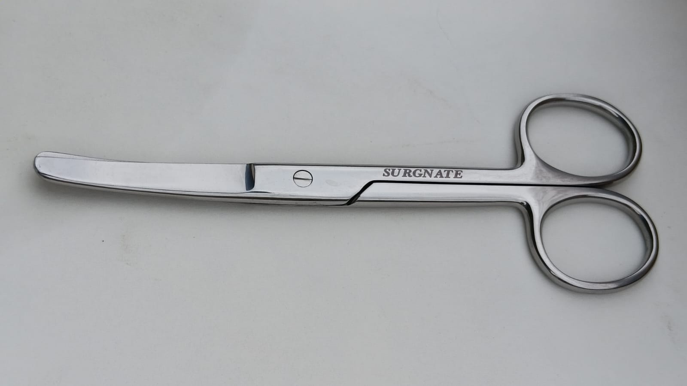

Precision Has Been Our Only Product
Surgnate exists for a simple reason — surgical teams deserve instruments that behave exactly the same way on the thousandth use as they did on the first.

Built in Sialkot, the World's Surgical Instrument Capital
Sialkot has shaped surgical steel for well over a century, supplying hospitals across the globe. Surgnate was founded inside that tradition — bringing together experienced instrument makers to build a focused range of scissors, done properly rather than a catalogue done broadly.
We don't chase every instrument category. We forge, grind, polish and inspect Operating, Mayo, Iris, Metzenbaum and Lister Bandage scissors — and we hold every one of them to the same standard before it earns the Surgnate name.
- Premium stainless steel sourced for surgical-grade hardness
- Hand-finished mirror polish on every blade
- Optional tungsten-carbide inserts & gold-plated handles
The Values Behind Every Instrument
Precision
Tolerances checked by hand, because "close enough" isn't a standard we accept.
Trust
What leaves our workshop is exactly what was promised on the spec sheet.
Performance
Instruments engineered to perform identically on cut one and cut one thousand.
Partnership
We work directly with hospitals and distributors to fit real theatre needs.
From Workshop Bench to Operating Table
Rooted in Sialkot's Instrument-Making Tradition
Surgnate began among craftsmen already fluent in the forging and grinding techniques that have defined Sialkot's surgical steel industry for generations.
A Focused Catalogue, Not a Sprawling One
We deliberately built out Operating, Mayo, Iris, Metzenbaum and Lister Bandage scissors first — mastering each before adding the next.
Tungsten Carbide & Gold-Plated Variants
Premium TC-inserted, gold-handled variants were introduced for teams that needed an edge that holds longer under high case volume.
Serving Hospitals Locally and Buyers Abroad
Surgnate instruments now reach clinics and distributors across Pakistan, with export inquiries welcomed from surgical buyers worldwide.
Every Standard We Build To
Ready to Equip Your Team With Instruments Built to Last?
Reach out with your requirements and our team will help you find the right configuration — steel or TC, straight or curved, retail or bulk.